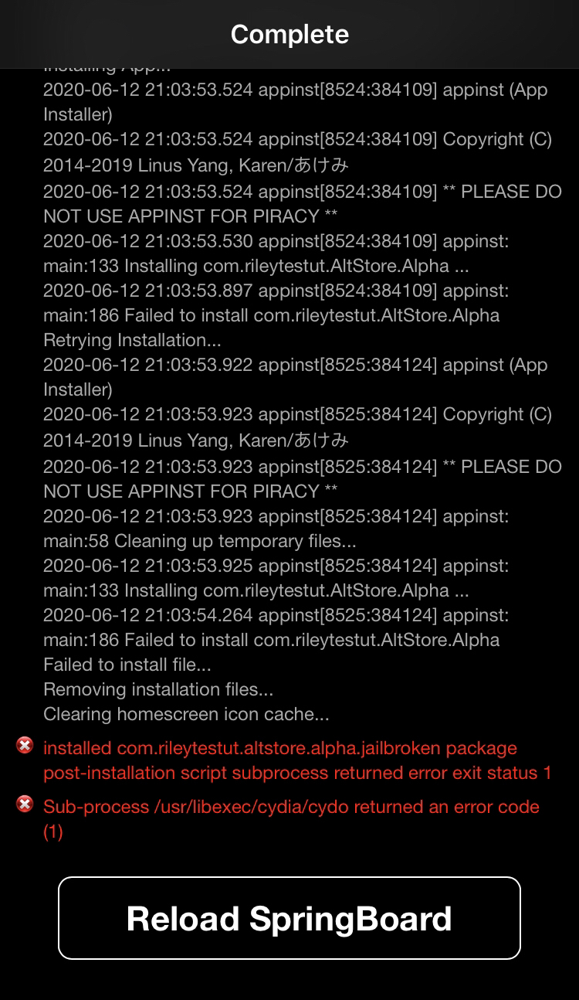

Unable to sign out:
Fix:
1. Uninstall "AltDeamon" and "AltStore (ALPHA)"
2. Open Filza
3. Enter the directory "/var/mobile/Library/Application Support"
4. Delete "AltStore.sqlite", "AltStore.sqlite-wal", "AltStore.sqlite-shm" and "Apps" folder
This seems to be a bug with iPads.
Error -2241:
Fix:
Respring your Device.
No Cert in Settings:
Fix:
Uninstall "AppSync Unified" (and "appinst" if you installed it)
Failed to verify signature...:
Fix:
1. Re-Install "AltStore (ALPHA)" & "AltDaemon" both from the repo
2. Open AltStore
3. Sign in with your APPLE ID
4. Refresh AltStore
5. You should see 2 AltStores in the homescreen
6. Delete the first one and keep the 2nd
7. Open the second and refresh it
8. Open Cydia (or others) and uninstall "AppSync Unified" (and "appinst" if you installed it)
9. Done!
Picture of Error:

Fix:
Download PowerSelector on Bigboss and do an LDRestart. Then Try Again